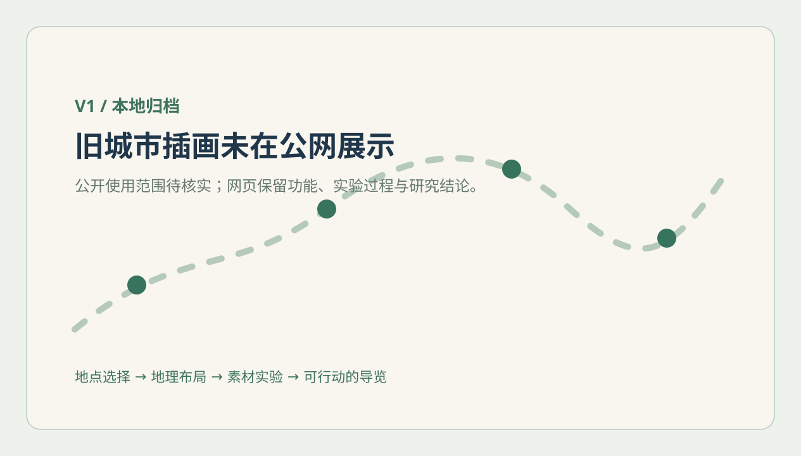

EXPERIMENT 01 · XI’AN · 4 PLACES
真实的距离，
决定一张图的结构。
钟鼓楼很近，兵马俑很远。
在不移动真实锚点的前提下，怎样让它们都看得清？
这次先验证位置
把 4 个已有地点的坐标变成可复算的图面，比较两种布局；再主动制造错误，检查能否发现。
01 / COMPARE TWO LAYOUTS
同一组坐标，两种表达。
先看连续图，再切换分区图
该如何选择？
全域图适合解释“在哪里”；局部放大图适合承载可辨认、可点击的地标。分区后仍需保留全域定位图。
| 方案 | 主图内最近锚点 | 占位重叠 | 投影一致性 |
|---|
02 / MAKE ERRORS VISIBLE
位置错了，能发现吗？
正常数据通过输入检查后，才进行布局。
03 / DATA, METHOD & LIMITS
哪些事实支持这个判断？
由原始经纬度计算的球面距离，不是步行、驾车距离或预计耗时。
坐标 → 投影 → 图幅 → 锚点
输入明确为 WGS84 经纬度；先投到局部平面，再在各图幅内等比缩放。素材可以换，锚点和地点编号保持关联。
只检查布局与输入是否一致，不能证明地图来源精度，也不能证明建筑画对、插画好看或可以导航。
展开计算与数据说明
局部球面等距圆柱近似：标准纬线与纬度原点 34.26°，中央经线 108.94°，R = 6371008.8 m。经纬差先转弧度，X = R × Δ经度 × cos(34.26°)，Y = R × Δ纬度；屏幕纵轴反向。仅供本次布局诊断。
图幅内 X/Y 使用同一缩放系数并居中留白。分图的位置是排版关系；各片区相对方位查看“全域定位”。占位按轴对齐正方形相交计算，不代表实际透明素材的遮挡程度。
地点来源：OpenStreetMap，© OpenStreetMap contributors，ODbL。坐标由 V1 冻结样本提取，原记录核实日 2026-09-22；本实验没有重新查询源站。
WHAT THIS MEANS FOR THE PRODUCT
先有地理结构，
再让景观长出来。
本轮建议采用“全域定位＋局部放大”的组织方式，进入 4 地标素材实验。分图方案是当前小样的候选，还需要更多地点与手机端可读性验证。
E2 已有首轮结果：根据真实照片生成四处地标，按这些锚点放置；大雁塔错误首版与修正过程均可查看。
打开 E2 实拍、生成与合成对照 ↗E2 已有候选 · 完整视觉验收待完成

回看 V1：保留交互方向，推进图稿的地理依据 ↗